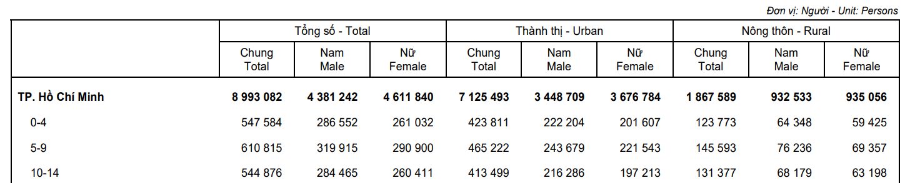

path2data <- paste0("C:/Users/ongph/github/data")Estimate immunity profile
Constant
Path to data:
Files names:
# Case notification
cases_file <- "measles/measles_cases_2019-12.2025.xlsx"
# Vaccination coverage
vax_hcmc_file <- "vax/vaxreg_hcmc_measles.rds"
# Population metadata
map_hcmc_file <- "map/gadm41_hcmc_district.rds"
census_file <- "census2019_hcm.rds"Packages
Required packages:
required <- c("openxlsx", "janitor", "tidyverse", "lubridate", "stringi", "sf")
# Installing those that are not installed yet:
to_install <- required[! required %in% installed.packages()[, "Package"]]
if (length(to_install)) install.packages(to_install)
# Loading the packages for interactive use:
invisible(sapply(required, library, character.only = TRUE))
Attaching package: 'janitor'The following objects are masked from 'package:stats':
chisq.test, fisher.test── Attaching core tidyverse packages ──────────────────────── tidyverse 2.0.0 ──
✔ dplyr 1.2.0 ✔ readr 2.1.5
✔ forcats 1.0.0 ✔ stringr 1.5.1
✔ ggplot2 3.5.2 ✔ tibble 3.2.1
✔ lubridate 1.9.4 ✔ tidyr 1.3.1
✔ purrr 1.0.4
── Conflicts ────────────────────────────────────────── tidyverse_conflicts() ──
✖ dplyr::filter() masks stats::filter()
✖ dplyr::lag() masks stats::lag()
ℹ Use the conflicted package (<http://conflicted.r-lib.org/>) to force all conflicts to become errors
Linking to GEOS 3.13.1, GDAL 3.11.0, PROJ 9.6.0; sf_use_s2() is TRUEFunctions
Clean Vietnamese district name
clean_district <- function(x) {
x |>
stri_trans_general("Latin-ASCII") |>
str_to_lower() |>
str_squish() |>
str_replace_all("đ", "d") |>
str_remove("^(quan |huyen |thanh pho |tp )")
}Data
Census:
df_census <- file.path(path2data, census_file) |>
readRDS() |>
mutate(district = clean_district(district))Case report data:
df_case <- file.path(path2data, cases_file) |>
read.xlsx(sheet = 4) |>
clean_names() |>
mutate(
ngay_nv = as.Date(as.numeric(ngay_nv), origin = "1899-12-30"),
ngay_sinh = as.Date(as.numeric(ngay_sinh), origin = "1899-12-30"),
age = time_length(interval(ngay_sinh, ngay_nv), "year"),
district = clean_district(quan_huyen)
)Vaccination coverage:
df_vax_hcmc <- file.path(path2data, vax_hcmc_file) |>
readRDS() |>
mutate(district = clean_district(district))Models that translate vaccination to immunity
Vaccine registry provides a snapshot of the vaccination status of all individuals, recording the age at which they received each dose of a measles-containing vaccine (MCV) and their total number of doses. Translating these individual-level records into an age-stratified, population-level immunity profile is called “effective vaccine coverage” (EVC) [Kumar et al. (2023)](Shattock et al. 2024).
“The proportion of a population/cohort effectively vaccinated against measles, i.e. an indicator of population immunity. It discounts individuals ineffectively vaccinated, i.e. those who are vaccinated but still susceptible to infection.” (Kumar et al. 2023)
Depending on the available immunity data, we can model protection using either a binary or a continuous (titre) approach:
Vaccine efficacy: modelling the proportion of the population that is immune.
Antibody titres: modelling individual titre dynamics, then aggregating them to form an age-stratified immunity profile.
Waning immunity and age-at-vaccination dependence can be incorporated into both frameworks.
Since longitudinal titre data for measles vaccine is still limited, for this thesis I will use the binary approach.
Static coverage
The simplest model assumes vaccine efficacy (VE) remains constant over time. EVC is calculated as the sum of individuals in mutually exclusive dosage strata, weighted by the static efficacy of that stratum (Kumar et al. 2023).
\[EVC = c_{\text{1 only}} \times VE_1 + c_{2+} \times VE_2\]
- \(c_{\text{1 only}}\) = proportion with 1 dose only
- \(c_{2+}\) = proportion with \(\geq 2\) doses
- \(VE_1, VE_2\) = vaccine efficacy per stratum
Waning immunity
If waning immunity is considered and longitudinal efficacy data is available (eg. initial efficacy, efficacy after \(t\) years, half-life efficacy…), efficacy at time \(t\) can be modelled using an exponential decay function where \(\alpha\) represents initial efficacy and \(\beta\) represents the decay rate fitted from empirical data (Shattock et al. 2024).
\[VE(t) = \alpha \times e^{-\beta t}\]
EVC for a cohort of age \(a\) in year \(y\) is estimated by calculating the cumulative probability of remaining unprotected despite multiple annual vaccination opportunities. \(VE(y-i)\)
\[EVC(y, a) = 1 - \prod_{i=y-a}^{y} \big( 1 - c(i, \text{age}_{i}) \times VE(y - i) \big)\]
- \(i\) = historical calendar year (iterating from birth year \(y-a\) to current year \(y\))
- \(c(i, \text{age}_{i})\) = historical vaccine coverage in year \(i\) for the cohort’s age at that time
- \(VE(y-i)\) = residual efficacy after \(y-i\) years have elapsed
Age-at-vaccination dependence
If vaccine efficacy depends on age at vaccination such as measles vaccine
\[VE(t, a_{vax}) = \alpha(a_{vax}) \times e^{-\beta(a_{vax}) t}\]
\[EVC(y, a) = 1 - \prod_{i=y-a}^{y} \big( 1 - c(i, \text{age}_{i}) \times VE(y - i, \text{age}_{i}) \big)\]
Parameters
| Parameter | Best estimate | 95% CI / range | Source |
|---|---|---|---|
| VE MCV1 at 9 mo | 85% | ||
| VE MCV1 at >=12 mo | 93-97% | ||
| VE MCV2 | 97-99% | ||
| Annual waning (proportion seroreverting) | 0.009/yr | 0.005-0.016/yr |
Cohort of children from vaccine registry
Confirm with 2019 census data. Age in census data ranged from 1-81.
summary(df_census$age) Min. 1st Qu. Median Mean 3rd Qu. Max.
1 21 41 41 61 81 
df_census |>
mutate(
band = case_when(
age %in% 1:5 ~ "1-5",
age %in% 6:10 ~ "6-10",
age %in% 11:15 ~ "11-15"
)
) |>
filter(!is.na(band)) |>
group_by(band) |>
summarise(total = sum(n))# A tibble: 3 × 2
band total
<chr> <dbl>
1 1-5 402559
2 11-15 500639
3 6-10 485167The 2019 census used pre-merger districts, while registry data have merged districts 2, 9, Thu Duc into Thu Duc:
setdiff(unique(df_census$district), unique(df_vax_hcmc$district))[1] "9" "2"So let’s merge 2, 9, Thu Duc into Thu Duc
census_aligned <- df_census |>
mutate(district = if_else(district %in% c("2", "9", "thu duc"), "thu duc", district)) |>
filter(age %in% 1:3) |>
group_by(district, age) |>
summarise(n_census = sum(n), .groups = "drop")
setdiff(unique(df_vax_hcmc$district),
unique(census_aligned$district))character(0)setdiff(unique(census_aligned$district),
unique(df_vax_hcmc$district))character(0)The 2019 census was conducted on 01/04/2019.
Assumption
The hypothesis is registry is comprehensive (just like how HCDC believed). If so, registry can inform:
- Susceptibility
Vaccine effectiveness of MCV1:
References
Kumar, Shurendar Selva, Anna-Maria Hartner, Arunah Chandran, Katy A. M. Gaythorpe, and Xiang Li. 2023. “Evaluating Effective Measles Vaccine Coverage in the Malaysian Population Accounting for Between-Dose Correlation and Vaccine Efficacy.” BMC Public Health 23 (1): 2351. https://doi.org/10.1186/s12889-023-17082-9.
Shattock, Andrew J., Helen C. Johnson, So Yoon Sim, Austin Carter, Philipp Lambach, Raymond C. W. Hutubessy, Kimberly M. Thompson, et al. 2024. “Contribution of Vaccination to Improved Survival and Health: Modelling 50 Years of the Expanded Programme on Immunization.” The Lancet 403 (10441): 2307–16. https://doi.org/10.1016/S0140-6736(24)00850-X.